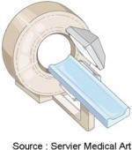

La scintigraphie
DefinitionLa scintigraphie est un examen qui explore les differents organes du corps humain grece a l’administration prealable, dans l’organisme, d’un traceur radioactif.
Les differents traceurs utilises sont specifiques et capables de se fixer selectivement sur l'organe que l'on desire etudier. Une camera e scintillation, detectant la radioactivite, se deplace selon un axe longitudinal et transversal au-dessus de l'organe etudie. Les informations sont ensuite presentees sous la forme d'un document photographique, en noir et blanc, parfois artificiellement colorise pour augmenter les contrastes.

Les types de scintigraphies Scintigraphie myocardique Principe
- Permet de visualiser le fonctionnement du muscle cardiaque.
- Evaluer le fonctionnement cardiaque, c'est-e-dire la contractilite du myocarde, des ventricules et la qualite de la perfusion du myocarde par les arteres coronaires.
- Bilans cardiaques avant l'instauration d'un traitement ou lors de la surveillance apres un traitement medical ou chirurgical d'une insuffisance coronarienne.
Scintigraphie osseuse Principe
- Permet de visualiser l'ensemble du squelette.
- Bilan des atteintes de certaines maladies osseuses inflammatoires ou en cas de cancer, afin de rechercher la presence de metastases osseuses.
Scintigraphie pulmonaire Principe
- Permet de visualiser la ventilation et la perfusion des poumons : l'air et le sang dans les poumons.
- Explorer la fonction ventilatoire du
poumon et la qualite de sa perfusion sanguine.
Suspicion d'embolie pulmonaire. - Evaluer la fonction respiratoire en cas de pneumopathie interstitielle diffuse, ou avant une intervention chirurgicale.
Scintigraphie thyroedienne Principe
- Permet de visualiser l'activite de la glande thyroedienne.
- Depistage de nodules ou goitre lors d'anomalies pereus lors de sa palpation en avant de la gorge.
- Bilan lors d'anomalies du fonctionnement de la thyroede, dont certaines sont confirmees par des dosages sanguins des hormones thyroediennes.